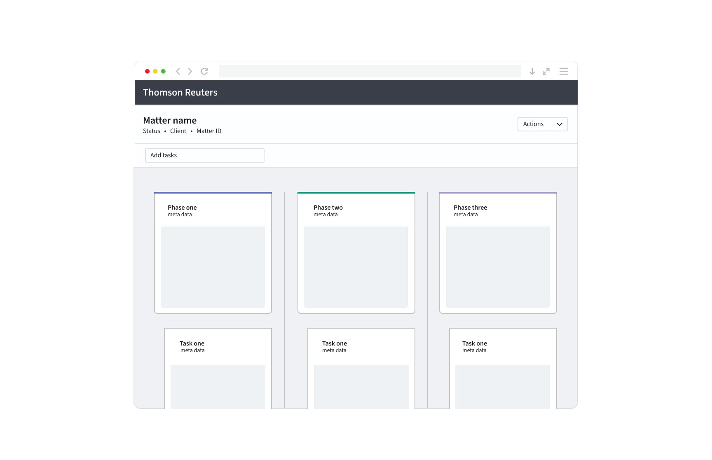

Legal productivity tools
Overview
Productivity tool for matter management
A workflow solution that enables lawyers and their teams to execute the entire process of matter management.
Major accomplishments
Two significant challenges arose as we worked on this project:
- Two applications at the same time
We created a customer-facing product application and an internal authoring tool for content editors. Our goals were to have a consistent user experience for each and reduce duplication of our efforts. To solve this challenge, we created a homegrown shareable product UI library of 43 built-in Angular components focused on WCAG 2.1 AA compliance. -
Improve customer engagement
Working with the product team, we discovered an opportunity to improve engagement with beta customers and capture first-time customers' attention for the upcoming Elite Vantage product conference. The goal was to update the product UI to align with our product principles and make a more engaging and delightful user interface. Generally, product refreshes take anywhere from ten months to more than a year and a half. Working with the lead UX designer, we had to be innovative to ensure we could deliver the outcome for our product team and bring forward the new design direction of the product to our customers. Collaborating with the lead designer, we determined the most significant wins we could gain, given our 10-day time constraint. We took our plan into action.
To summarize the pressure that led to innovation and results for our customers, I'd like to highlight the constraints.- Over 1,100 attendees—including 38 partner companies- will see our product represented at the Elite Vantage conference.
- A 10-day deadline to complete the refresh.
- Over 600 design decisions had to be updated.
- Limited resources of 1 UX Designer and 2 UX Engineers.
- Multiple code repositories and release management (Thomson Reuters Panoramic ™, UI library, & Internal content authoring tool)
- Daily progress check-ins.
With all of these constraints, I took the designer's vision and delivered value for customers and the product team within the timeline.
I learned from this visual design refresh challenge that we are innovative when we find ourselves in challenging problem spaces; we can persevere by understanding the purpose, taking action, and addressing expectations. The Vantage 10-day sprint set us up for future success to finish the refresh and future-proof our UI component library. We can achieve our goals by focusing on what is essential.
We can build relationships, understand each other to solve customer problems, and work with any constraints given a collective alignment on the scope to deliver the highest value and innovate together.
Role & responsibilities
Lead UX Engineer, Thomson Reuters
- Delegating work for 4 UXE across 7 workstreams and 2 products
- Applying visual designs to the product, including responsive design
- Making product workflows WCAG 2.1 AA compliant
- Owner of UI library
Scope of project
- Customer facing Thomson Reuters Panoramic ™ application
- Internal content authoring application
- Internal UI Library of components
Year: 2016 - 2019
Tools: Angular (2-9), SCSS, HTML, GitHub, Azure Dev Ops